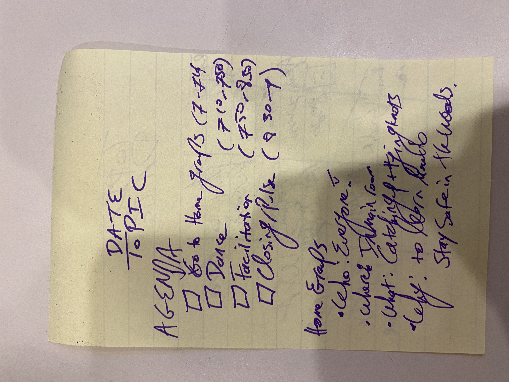

BOLT Lesson Plan Redesign
Brown Outdoor Leadership Training is a Brown University program that teaches leadership and outdoor skills to
rising
sophomores and upperclassmen trip leaders through trips to the White Mountains in New Hampshire. This
community
has
been an integral part of my undergraduate experience.
In Fall 2022, BOLT's steering committee, of which I was a member, was tasked with redesigning the curriculum
we
use
to train our new backpacking trip leaders. This overhaul included minor things like updating links to
references, to
starting some trainings, such as "Wellness on Trail" from ground zero. When committee members perused the
old
lesson
plans, they found them difficult to read and also non-standardized. I, particularly concerned about this
problem,
decided to tackle it in addition to the curricular reforms I was participating in.
By creating this new layout, with a brand-new cover page detailing need-to-know-information, in addition to
typography edits throughout the document, I was able to create a more readable, and thus effective, lesson
plan
for
the next semester's trainings.
If you're curious about the BOLT program generally, go to brown.edu/bolt.
Part I - Rough Draft Designs
To begin this project, I created a couple of sketches to test out what the layout of the website would
look
like. I tried three different designs, each of which had different emphases on the first page and
different
hierarchies in the subsequent pages. The results of this experimentation are below:
My Sketches

Feedback from Steering Committee
The steering committee had the following feedback on the designs:
- They really enjoyed having the quick-reference information on the cover page of the training so
that
they could easily access it, but they thought that using icons form the other designs could be
helpful
in guiding the reader.
- They expressed that they enjoyed designs that limited their use of bullet points and that had a
clear
hierarchy, unlike the current design.
- They wished they could see more clearly what the schedule of the evening was without having to
reference the headings on each of the multiple pages.
Part II - Prototype
After hearing the response from the committee, I created a hi-fi prototype of the document within Google
Docs, the tool we use to coillaboratively create the websites. An interactive display of the prototype is
included below:
Feedback from Steering Committee + Implementation
After the prototype, there were not many substantative comments the steering committee held, but they had
a couple of tweaks for me which I implemented.
- Add a 'in charge of' column on the first page to allow people to more easily allow facilitators to
check what they are responsible for teaching.
- Find ways to make it easy to navigate between lessons (like there are tabs in a spreadsheet)
- Create a way to differentiate between energizers/breaks and more serious material in the lessons.
Final Product
The final product is embedded below.
Conclusions & Takeaways
- Workshopping design in groups is necessary to ensure that the design being created is as best as
possible.
- Designs of a template should not only work individually, but should allow cross-lesson or
cross-implementation collaboration.
- Providing necessary information up-front in a document (or any other layout) assists greatly in
enabling allowing users to easily and quickly reference important information.
Overall, this project was an exciting way to invoke design to make trainings and teaching more effective for
participants in the BOLT program. If I were to change one thing, I wish that I had involved the community more
in the planning process, and done more user research before generating the sketches/designs. I feel like the
final design would have been more practical if that had been the case. I am thankful that BOLT enabled me to
experiment with their layouts and I am excited to help implement these trainings in Spring 2023.